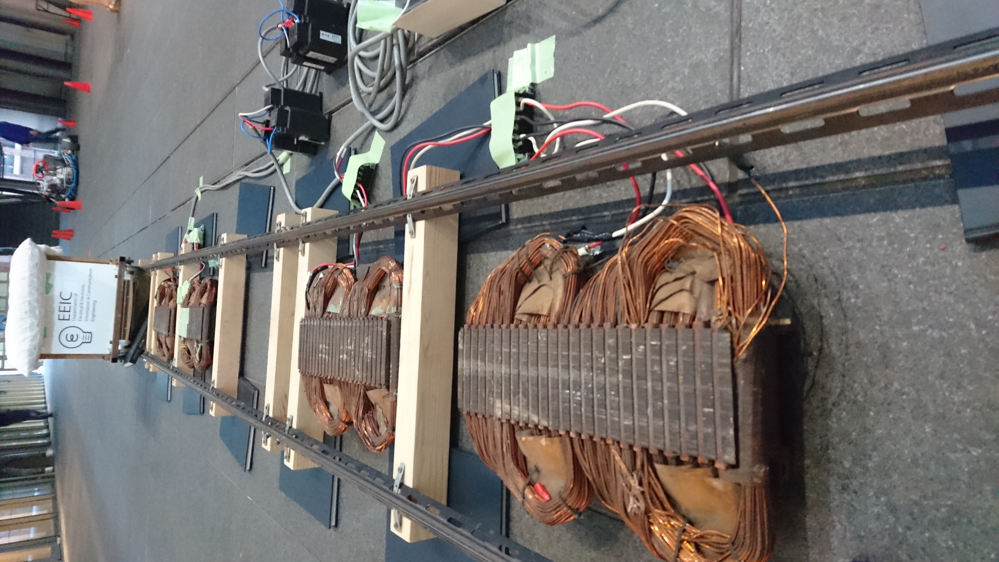

研究室展示
このブースでは東京大学電気系の
各研究室の企画が展示されています。
東京大学の最先端の研究の一端を
体験してください。
情報
生活の中でさらに重要性が
増している情報技術
IoTをはじめとした情報技術の
最先端をご覧ください。
川原研究室

銀ナノインク
紙に書くだけで電気を通す不思議なペンを使った
ワークショップを行います。
自由にお絵描きした線が電気を通すようになり、
LEDを光らせることができます。
自分の目で見て手を動かしながら回路を描くことで、
普段の生活ではイメージしづらい
「電気」を一歩身近に感じることができるはずです。
相澤・山崎研究室

FoodLog・電子化粧
画像認識技術を応用したFoodLogと電子化粧の展示を行います。
FoodLogはあなたのスマホに保存されている
食事画像から料理名やカロリー推定を行います。
電子化粧はあなたの魅力を最大化する化粧を
お顔の画像に合成し、その化粧後のお顔の画像を
印刷したものをお渡しします。
最先端技術をぜひ体験してみてください！
鶴岡研究室

知の情報処理
知の情報処理とは、計算機に
知的・人間的な情報処理をさせることです。
ここでは、自然言語処理とコンピュータゲームプレイヤ
について展示を行っています。
実際にコンピュータと対戦もできるので
ぜひ遊んでみてください
矢谷研究室

情報可視化システム
矢谷研究室(IIS-Lab)では五月祭を楽しめる
コンテンツがわかりやすくまとまった「五月祭アプリ」、
学生が製作した「情報可視化システム」
の2つを展示しています。
どちらも「見て、触って」楽しめる展示
なのでぜひ遊びに来てください。
電子デバイス・バイオ
情報化社会の基盤となる
半導体デバイス技術
普段意識せずに使用している技術に
触れてみてください。
関野研究室

筋電図でラジコンを動かそう
こちらのショベルカー、普通のラジコン
のようなコントローラはありません。
代わりにあなたの「腕」で操ってもらいます。
腕に小さい電極を張り付け、腕の筋肉を流れる電流を測ることで、
腕や指の傾き、力の入れ方を認識し、
そのパターンによってラジコンのショベルカーを操作します。
「ハンドパワー」ならぬ、「アームパワー」を体験してみませんか?
三田研究室

ゲートアレイによる集積回路の設計
マイクロマシンへの応用
大規模集積回路(VLSI)作製技術を用いて
東京大学のクリーンルームにおいて作製したチップと、
同じく大学内において作製可能な
マイクロマシン(MEMS)技術について紹介します。
電子回路に興味のある人もそうでない人も
是非見に来てください。
高木・竹中研究室

ガスセンサを用いた展示
現在の情報技術はシリコンを始めとする
半導体デバイス技術の上に成り立っています。
今回は、半導体デバイス技術の一例として、
ガスセンサを用いた展示を行います。
ケーキにゆっくりと息を吹きかけると
LEDのロウソクが…!
染谷研究室

「柔らかさ」や「軽さ」に焦点を当てた
次世代の電子デバイス：フレキシブルデバイスの
プロトタイプを展示します。
衣服や体に無理なく埋め込むことで、
IoT時代の医療・ヘルスケアを
サポートすることを目指しています。
五月祭では、極薄基板に作成した羽より軽い回路や、
布地に作成した伸縮性センサなどを展示する予定です。
エネルギー・制御
この社会を根底から支えるエネルギー技術や
あらゆる分野で活躍する制御技術の展示です。
縁の下の力持ちといえる
これらの分野について学びませんか?
大崎研究室

極低温での不思議な現象
「超電導」に触れよう！
大崎研究室では超電導の応用を研究しており、
今回は高温超電導体と-196℃の液体窒素を用いた
磁気浮上の展示を行います。
この機会に是非「超電導」を体験してください。
日高・熊田研究室

雷実験
迫力満点の雷現象や、息をのむほど美しい放電現象を、
皆様の目の前でお見せします。 ！
実際の雷ってどんな感じ？雷から身を守るには？
雷が落ちたらどうなるの？
ここで見なくてはきっと一生見ることのできない実験ばかり！！
ぜひその目でお確かめください。お見逃しなく！
馬場研究室
リニアモーターカー
電流が磁界を生み、磁界が電流を生む。
そして、電流と磁界がいっしょになって力を生み出します。
そんな不思議な力を利用して、
リニアモーターカーは前へと進みます。
地下鉄などに使われている
鉄輪式リニアモーターカーの力をぜひ体感してください。
堀・藤本研究室

なんかすごいぞ！電気のチカラ！(仮)
将来の電気自動車は道路から
無線で送られた電気を使って走るかもしれません。
車体からインホイールモータへ無線で電気を！
送って走る未来の電気自動車の実際のモータの
デモと受送電コイルの展示や、ミニ四駆を用いた無線給電デモ。
スリップを防ぐ電気自動車の走行実験もご覧頂けます。